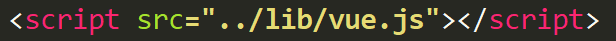
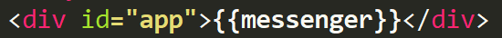
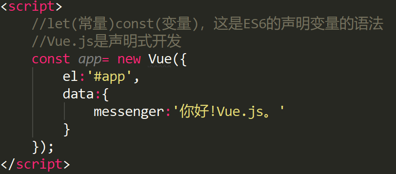
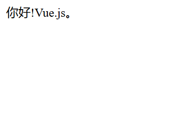
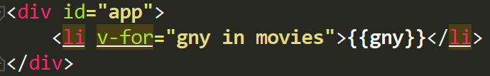
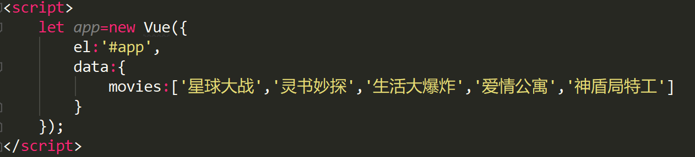
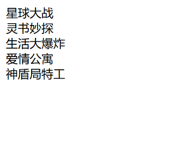

1、vue初时
vue安装三种方式：
1：CDN引入
以下推荐国外比较稳定的两个 CDN，国内还没发现哪一家比较好，目前还是建议下载到本地。
Staticfile CDN（国内） : https://cdn.staticfile.org/vue/2.2.2/vue.min.js
unpkg：https://unpkg.com/vue/dist/vue.js, 会保持和 npm 发布的最新的版本一致。
cdnjs : https://cdnjs.cloudflare.com/ajax/libs/vue/2.1.8/vue.min.js
2：下载本地引入
开发版本：包含完整的警告和调试模式---https://cn.vuejs.org/js/vue.js
生产版本：删除了警告，33.30KB min+gzip---https://cn.vuejs.org/js/vue.min.js
3：npm安装
在用 Vue 构建大型应用时推荐使用 NPM 安装[1]。NPM 能很好地和诸如 webpack 或 Browserify 模块打包器配合使用。同时 Vue 也提供配套工具来开发单文件组件。
# 最新稳定版
$ npm install vue
2、helloVue.js初体验
1：首先安装好vue

2: 创建一个div 设置一个ID名为app

然后将vue实例对象中data属性里的messenge以插值表达式的方式插入到div中
3：创建一个名为app的vue实例对象，

最后 浏览器中查看显示效果

3、Vue展示列表
1：安装vue
2：创建一个id为app的div,里面再创建一个li

3:创建以一个名为app的vue的实例对象

最后 浏览器中查看显示效果
